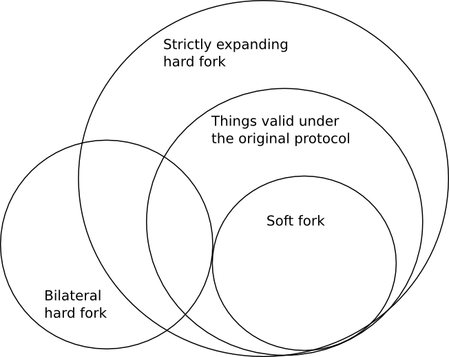

Hard Forks, Soft Forks, Defaults and Coercion
2017 Mar 14
See all posts
Hard Forks, Soft Forks, Defaults and Coercion
One of the important arguments in the blockchain space is that of
whether hard forks or soft forks are the preferred protocol upgrade
mechanism. The basic difference between the two is that soft forks
change the rules of a protocol by strictly reducing the set of
transactions that is valid, so nodes following the old rules will still
get on the new chain (provided that the majority of miners/validators
implements the fork), whereas hard forks allow previously invalid
transactions and blocks to become valid, so clients must upgrade their
clients in order to stay on the hard-forked chain. There are also two
sub-types of hard forks: strictly expanding hard forks, which
strictly expand the set of transactions that is valid, and so
effectively the old rules are a soft fork with respect to the new rules,
and bilateral hard forks, where the two rulesets are
incompatible both ways.
Here is a Venn diagram to illustrate the fork types:

The benefits commonly cited for the two are as follows.
- Hard forks allow the developers much more flexibility in making the
protocol upgrade, as they do not have to take care to make sure that the
new rules "fit into" the old rules
- Soft forks are more convenient for users, as users do not need to
upgrade to stay on the chain
- Soft forks are less likely to lead to a chain split
- Soft forks only really require consent from miners/validators (as
even if users still use the old rules, if the nodes making the chain use
the new rules then only things valid under the new rules will get into
the chain in any case); hard forks require opt-in consent from
users
Aside from this, one major criticism often given for hard forks is
that hard forks are "coercive". The kind of coercion implied here is not
physical force; rather, it's coercion through network effect.
That is, if the network changes rules from A to B, then even if you
personally like A, if most other users like B and switch to B then you
have to switch to B despite your personal disapproval of the change in
order to be on the same network as everyone else.
Proponents of hard forks are often derided as trying to effect a
"hostile take over" of a network, and "force" users to go along with
them. Additionally, the risk of chain splits is often used to bill hard
forks as "unsafe".
It is my personal viewpoint that these criticisms are wrong, and
furthermore in many cases completely backwards. This viewpoint is not
specific to Ethereum, or Bitcoin, or any other blockchain; it arises out
of general properties of these systems, and is applicable to any of
them. Furthermore, the arguments below only apply to controversial
changes, where a large portion of at least one constituency
(miners/validators and users) disapprove of them; if a change is
non-contentious, then it can generally be done safely no matter what the
format of the fork is.
First of all, let us discuss the question of coercion. Hard forks and
soft forks both change the protocol in ways that some users may not
like; any protocol change will do this if it has less than
exactly 100% support. Furthermore, it is almost inevitable that at least
some of the dissenters, in any scenario, value the network
effect of sticking with the larger group more than they value their own
preferences regarding the protocol rules. Hence, both fork types are
coercive, in the network-effect sense of the word.
However, there is an essential difference between hard forks and soft
forks: hard forks are opt-in, whereas soft forks allow users no
"opting" at all. In order for a user to join a hard forked chain,
they must personally install the software package that implements the
fork rules, and the set of users that disagrees with a rule change even
more strongly than they value network effects can theoretically simply
stay on the old chain - and, practically speaking, such an event has already happened.
This is true in the case of both strictly expanding hard forks and
bilateral hard forks. In the case of soft forks, however, if the
fork succeeds the unforked chain does not exist. Hence,
soft forks clearly institutionally favor coercion over
secession, whereas hard forks have the opposite bias. My own
moral views lead me to favor secession over coercion, though others may
differ (the most common argument raised is that network effects are
really really important and it is essential that "one
coin rule them all", though more moderate versions of this also
exist).
If I had to guess why, despite these arguments, soft forks are often
billed as "less coercive" than hard forks, I would say that it is
because it feels like a hard fork "forces" the user into installing a
software update, whereas with a soft fork users do not "have" to do
anything at all. However, this intuition is misguided: what matters is
not whether or not individual users have to perform the simple
bureaucratic step of clicking a "download" button, but rather whether or
not the user is coerced into accepting a change in protocol
rules that they would rather not accept. And by this metric, as
mentioned above, both kinds of forks are ultimately coercive, and it is
hard forks that come out as being somewhat better at preserving user
freedom.
Now, let's look at highly controversial forks, particularly
forks where miner/validator preferences and user preferences conflict.
There are three cases here: (i) bilateral hard forks, (ii) strictly
expanding hard forks, and (iii) so-called "user-activated soft forks"
(UASF). A fourth category is where miners activate a soft fork
without user consent; we will get to this later.
First, bilateral hard forks. In the best case, the situation is
simple. The two coins trade on the market, and traders decide the
relative value of the two. From the ETC/ETH case, we have overwhelming
evidence that miners are overwhelmingly likely to simply assign their
hashrate to coins based on the ratio of prices in order to maximize
their profit, regardless of their own ideological views.

Even if some miners profess ideological preferences toward one side
or the other, it is overwhemingly likely that there will be enough
miners that are willing to arbitrage any mismatch between price ratio
and hashpower ratio, and bring the two into alignment. If a cartel of
miners tries to form to not mine on one chain, there are overwheming
incentives to defect.
There are two edge cases here. The first is the possibilty that,
because of an inefficient difficulty adjustment algorithm, the value of
mining the coin goes down becase price drops but difficulty does not go
down to compensate, making mining very unprofitable, and there are no
miners willing to mine at a loss to keep pushing the chain forward until
its difficulty comes back into balance. This was not the case with
Ethereum, but may well be
the case with Bitcoin. Hence, the minority chain may well simply
never get off the ground, and so it will die. Note that the normative
question of whether or not this is a good thing depends on your
views on coercion versus secession; as you can imagine from what I wrote
above I personally believe that such minority-chain-hostile difficulty
adjustment algorithms are bad.
The second edge case is that if the disparity is very large, the
large chain can 51% attack the smaller chain. Even in the case of an
ETH/ETC split with a 10:1 ratio, this has not happened; so it is
certainly not a given. However, it is always a possibility if miners on
the dominant chain prefer coercion to allowing secession and act on
these values.
Next, let's look at strictly expanding hard forks. In an SEHF,
there is the property that the non-forked chain is valid under the
forked rules, and so if the fork has a lower price than the non-forked
chain, it will have less hashpower than the non-forked chain, and so the
non-forked chain will end up being accepted as the longest chain by
both original-client and forked-client rules - and so the forked
chain "will be
annihilated".
There is an argument that there is thus a strong inherent bias
against such a fork succeeding, as the possibility that the forked chain
will get annihiliated will be baked into the price, pushing the price
lower, making it even more likely that the chain will be annihilated...
This argument to me seems strong, and so it is a very good reason to
make any contentious hard fork bilateral rather than strictly
expanding.
Bitcoin Unlimited developers suggest dealing with this problem by making
the hard fork bilateral manually after it happens, but a better
choice would be to make the bilaterality built-in; for example, in the
bitcoin case, one can add a rule to ban some unused opcode, and then
make a transaction containing that opcode on the non-forked chain, so
that under the forked rules the non-forked chain will from then on be
considered forever invalid. In the Ethereum case, because of various
details about how state calculation works, nearly all hard forks are
bilateral almost automatically. Other chains may have different
properties depending on their architecture.
The last type of fork that was mentioned above is the
user-activated soft fork. In a UASF, users turn on the soft fork rules
without bothering to get consensus from miners; miners are expected to
simply fall in line out of economic interest. If many users do not go
along with the UASF, then there will be a coin split, and this will lead
to a scenario identical to the strictly expanding hard fork, except -
and this is the really clever and devious part of the concept - the
same "risk of annihilation" pressure that strongly disfavors the forked
chain in a strictly expanding hard fork instead strongly favors the
forked chain in a UASF. Even though a UASF is opt-in, it uses
economic asymmetry in order to bias itself toward success (though the
bias is not absolute; if a UASF is decidedly unpopular then it will not
succeed and will simply lead to a chain split).
However, UASFs are a dangerous game. For example, let us suppose that
the developers of a project want to make a UASF patch that converts an
unused opcode that previously accepted all transactions into an opcode
that only accepts transactions that comply with the rules of some cool
new feature, though one that is politically or technically controversial
and miners dislike. Miners have a clever and devious way to fight back:
they can unilaterally implement a miner-activated soft fork that
makes all transactions using the feature created by the soft fork always
fail.
Now, we have three rulesets:
- The original rules where opcode X is always valid.
- The rules where opcode X is only valid if the rest of the
transaction complies with the new rules
- The rules where opcode X is always invalid.
Note that (2) is a soft-fork with respect to (1), and (3) is a
soft-fork with respect to (2). Now, there is strong economic pressure in
favor of (3), and so the soft-fork fails to accomplish its
objective.
The conclusion is this. Soft forks are a dangerous game, and they
become even more dangerous if they are contentious and miners start
fighting back. Strictly expanding hard forks are also a dangerous game.
Miner-activated soft forks are coercive; user-activated soft forks are
less coercive, though still quite coercive because of the economic
pressure, and they also have their dangers. If you really want to make a
contentious change, and have decided that the high social costs of doing
so are worth it, just do a clean bilateral hard fork, spend some time to
add some proper replay protection, and let the market sort it out.
Hard Forks, Soft Forks, Defaults and Coercion
2017 Mar 14 See all postsOne of the important arguments in the blockchain space is that of whether hard forks or soft forks are the preferred protocol upgrade mechanism. The basic difference between the two is that soft forks change the rules of a protocol by strictly reducing the set of transactions that is valid, so nodes following the old rules will still get on the new chain (provided that the majority of miners/validators implements the fork), whereas hard forks allow previously invalid transactions and blocks to become valid, so clients must upgrade their clients in order to stay on the hard-forked chain. There are also two sub-types of hard forks: strictly expanding hard forks, which strictly expand the set of transactions that is valid, and so effectively the old rules are a soft fork with respect to the new rules, and bilateral hard forks, where the two rulesets are incompatible both ways.
Here is a Venn diagram to illustrate the fork types:
The benefits commonly cited for the two are as follows.
Aside from this, one major criticism often given for hard forks is that hard forks are "coercive". The kind of coercion implied here is not physical force; rather, it's coercion through network effect. That is, if the network changes rules from A to B, then even if you personally like A, if most other users like B and switch to B then you have to switch to B despite your personal disapproval of the change in order to be on the same network as everyone else.
Proponents of hard forks are often derided as trying to effect a "hostile take over" of a network, and "force" users to go along with them. Additionally, the risk of chain splits is often used to bill hard forks as "unsafe".
It is my personal viewpoint that these criticisms are wrong, and furthermore in many cases completely backwards. This viewpoint is not specific to Ethereum, or Bitcoin, or any other blockchain; it arises out of general properties of these systems, and is applicable to any of them. Furthermore, the arguments below only apply to controversial changes, where a large portion of at least one constituency (miners/validators and users) disapprove of them; if a change is non-contentious, then it can generally be done safely no matter what the format of the fork is.
First of all, let us discuss the question of coercion. Hard forks and soft forks both change the protocol in ways that some users may not like; any protocol change will do this if it has less than exactly 100% support. Furthermore, it is almost inevitable that at least some of the dissenters, in any scenario, value the network effect of sticking with the larger group more than they value their own preferences regarding the protocol rules. Hence, both fork types are coercive, in the network-effect sense of the word.
However, there is an essential difference between hard forks and soft forks: hard forks are opt-in, whereas soft forks allow users no "opting" at all. In order for a user to join a hard forked chain, they must personally install the software package that implements the fork rules, and the set of users that disagrees with a rule change even more strongly than they value network effects can theoretically simply stay on the old chain - and, practically speaking, such an event has already happened.
This is true in the case of both strictly expanding hard forks and bilateral hard forks. In the case of soft forks, however, if the fork succeeds the unforked chain does not exist. Hence, soft forks clearly institutionally favor coercion over secession, whereas hard forks have the opposite bias. My own moral views lead me to favor secession over coercion, though others may differ (the most common argument raised is that network effects are really really important and it is essential that "one coin rule them all", though more moderate versions of this also exist).
If I had to guess why, despite these arguments, soft forks are often billed as "less coercive" than hard forks, I would say that it is because it feels like a hard fork "forces" the user into installing a software update, whereas with a soft fork users do not "have" to do anything at all. However, this intuition is misguided: what matters is not whether or not individual users have to perform the simple bureaucratic step of clicking a "download" button, but rather whether or not the user is coerced into accepting a change in protocol rules that they would rather not accept. And by this metric, as mentioned above, both kinds of forks are ultimately coercive, and it is hard forks that come out as being somewhat better at preserving user freedom.
Now, let's look at highly controversial forks, particularly forks where miner/validator preferences and user preferences conflict. There are three cases here: (i) bilateral hard forks, (ii) strictly expanding hard forks, and (iii) so-called "user-activated soft forks" (UASF). A fourth category is where miners activate a soft fork without user consent; we will get to this later.
First, bilateral hard forks. In the best case, the situation is simple. The two coins trade on the market, and traders decide the relative value of the two. From the ETC/ETH case, we have overwhelming evidence that miners are overwhelmingly likely to simply assign their hashrate to coins based on the ratio of prices in order to maximize their profit, regardless of their own ideological views.
Even if some miners profess ideological preferences toward one side or the other, it is overwhemingly likely that there will be enough miners that are willing to arbitrage any mismatch between price ratio and hashpower ratio, and bring the two into alignment. If a cartel of miners tries to form to not mine on one chain, there are overwheming incentives to defect.
There are two edge cases here. The first is the possibilty that, because of an inefficient difficulty adjustment algorithm, the value of mining the coin goes down becase price drops but difficulty does not go down to compensate, making mining very unprofitable, and there are no miners willing to mine at a loss to keep pushing the chain forward until its difficulty comes back into balance. This was not the case with Ethereum, but may well be the case with Bitcoin. Hence, the minority chain may well simply never get off the ground, and so it will die. Note that the normative question of whether or not this is a good thing depends on your views on coercion versus secession; as you can imagine from what I wrote above I personally believe that such minority-chain-hostile difficulty adjustment algorithms are bad.
The second edge case is that if the disparity is very large, the large chain can 51% attack the smaller chain. Even in the case of an ETH/ETC split with a 10:1 ratio, this has not happened; so it is certainly not a given. However, it is always a possibility if miners on the dominant chain prefer coercion to allowing secession and act on these values.
Next, let's look at strictly expanding hard forks. In an SEHF, there is the property that the non-forked chain is valid under the forked rules, and so if the fork has a lower price than the non-forked chain, it will have less hashpower than the non-forked chain, and so the non-forked chain will end up being accepted as the longest chain by both original-client and forked-client rules - and so the forked chain "will be annihilated".
There is an argument that there is thus a strong inherent bias against such a fork succeeding, as the possibility that the forked chain will get annihiliated will be baked into the price, pushing the price lower, making it even more likely that the chain will be annihilated... This argument to me seems strong, and so it is a very good reason to make any contentious hard fork bilateral rather than strictly expanding.
Bitcoin Unlimited developers suggest dealing with this problem by making the hard fork bilateral manually after it happens, but a better choice would be to make the bilaterality built-in; for example, in the bitcoin case, one can add a rule to ban some unused opcode, and then make a transaction containing that opcode on the non-forked chain, so that under the forked rules the non-forked chain will from then on be considered forever invalid. In the Ethereum case, because of various details about how state calculation works, nearly all hard forks are bilateral almost automatically. Other chains may have different properties depending on their architecture.
The last type of fork that was mentioned above is the user-activated soft fork. In a UASF, users turn on the soft fork rules without bothering to get consensus from miners; miners are expected to simply fall in line out of economic interest. If many users do not go along with the UASF, then there will be a coin split, and this will lead to a scenario identical to the strictly expanding hard fork, except - and this is the really clever and devious part of the concept - the same "risk of annihilation" pressure that strongly disfavors the forked chain in a strictly expanding hard fork instead strongly favors the forked chain in a UASF. Even though a UASF is opt-in, it uses economic asymmetry in order to bias itself toward success (though the bias is not absolute; if a UASF is decidedly unpopular then it will not succeed and will simply lead to a chain split).
However, UASFs are a dangerous game. For example, let us suppose that the developers of a project want to make a UASF patch that converts an unused opcode that previously accepted all transactions into an opcode that only accepts transactions that comply with the rules of some cool new feature, though one that is politically or technically controversial and miners dislike. Miners have a clever and devious way to fight back: they can unilaterally implement a miner-activated soft fork that makes all transactions using the feature created by the soft fork always fail.
Now, we have three rulesets:
Note that (2) is a soft-fork with respect to (1), and (3) is a soft-fork with respect to (2). Now, there is strong economic pressure in favor of (3), and so the soft-fork fails to accomplish its objective.
The conclusion is this. Soft forks are a dangerous game, and they become even more dangerous if they are contentious and miners start fighting back. Strictly expanding hard forks are also a dangerous game. Miner-activated soft forks are coercive; user-activated soft forks are less coercive, though still quite coercive because of the economic pressure, and they also have their dangers. If you really want to make a contentious change, and have decided that the high social costs of doing so are worth it, just do a clean bilateral hard fork, spend some time to add some proper replay protection, and let the market sort it out.